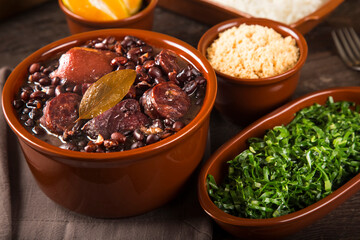
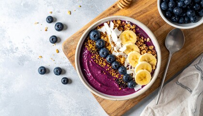

Gastronomia Brasileira
Delicie-se com os sabores únicos da culinária brasileira.
Feijoada
Prato típico com feijão preto e carnes.

Açaí
Sobremesa refrescante da região Norte.

Descubra os encantos do turismo brasileiro
Delicie-se com os sabores únicos da culinária brasileira.
Prato típico com feijão preto e carnes.

Sobremesa refrescante da região Norte.
